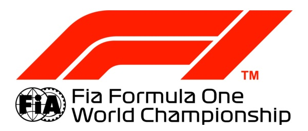

Bienvenidos
Por primera vez en la historia se celebrará en Euskadi un gran premio de F1. Aquí encontrarás toda la información relevante sobre tan destacado evento..
Permanece atento a la web o suscribete a nuestra newsletter para conocer las últimas novedades..
Lo más destacado
- La carrera tendra lugar los días 20-21-22 deNoviembre.
- Puntuable para el campeonato Mundial.
- Eventos asociados en todo el territorio.
- Sorpresas aún por desvelar.